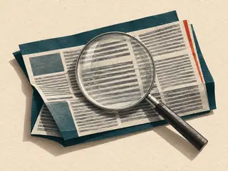

منذ آخر زيارة—
—قصة جديدة أو محدّثة
منصة إعلامية عربية مستقلة للأخبار والتحقيقات والتوثيق والتوعية بالحقوق والحريات.An independent Arab media platform for news, investigations, documentation, and public understanding of rights and freedoms.

خمس قصص رتّبتها غرفة الأخبار حسب الأهمية.Five stories selected and ordered by the newsroom.
الدول السبع أبقت مستوى الإنتاج المطلوب لديسمبر عند مستوى سبتمبر. نميّز بين الحصص المعلنة والإنتاج الفعلي وما لم يُقرر بعد.Seven countries kept December’s required production at September levels. We separate announced targets from actual output and outstanding decisions.
افتح ملف الحدثOpen the dossier · Arabicنتابع بيانات العبور والحوادث لفصل التطورات الفعلية عن التصريحات بشأن إعادة فتح الممر.Transit and incident reports help distinguish real changes at sea from statements about reopening the strait.
افتح ملف الحدثOpen the dossier · Arabicماذا تغيّر على الساحل، وماذا تقول بيانات العبور عن الملاحة التجارية؟What changed on the coast, and what does transit data tell us about commercial shipping?
افتح ملف الحدثOpen the dossier · Arabicتحليل لرهانات السودان وروسيا على ساحل البحر الأحمر، وما يفصل الاتفاق عن التنفيذ.An analysis of Sudan’s and Russia’s stakes on the Red Sea and the gap between agreement and implementation.
WRLDLINEWRLDLINEاقرأ القصةRead the storyتغطية «اليوم» لتوزيع المساعدات الغذائية على الأسر النازحة.Alyaum reports on food assistance for displaced families.
اليومAlyaumاقرأ القصةRead the storyما حدث، وما تغيّر، وميزان الروايات، والأثر على السعودية والخليج، وما نراقبه تالياً — بمصادر مؤرخة وحالة تحقق واضحة.
مواعيد وقرارات ومؤشرات من ملفات الأحداث، مع تمييز الموعد المحدد عن النافذة التقديرية.
طبقة شفافة تفصل الخبر المنسوب إلى مصدره عن التحليل المساعد، وتوضح ما نعرفه وما يحتاج إلى دليل إضافي.
قصة جديدة أو محدّثة
نحسب الأدلة المستقلة والتأكيدات الرسمية، لا عدد العناوين.
حدد الدولة والتاريخ والمنطقة لفصل السياسة الأمنية والاقتصادية والاجتماعية عن الانطباع السريع.
ملفات مفتوحة تشرح الخلفية والأطراف والسيناريوهات، وتربط كل تطور بتغطيته المباشرة.
فصل واضح بين الحقائق المؤكدة والتقديرات والروايات المتنازع عليها.
مؤشرات محددة تساعدك على متابعة ما سيحدث بدلاً من الاكتفاء بردّ الفعل.
نقارن الأهمية التقريبية بحجم التغطية، لا بعدد العناوين وحده.
يحتاج حساب المؤشر إلى عينة من الأخبار المنشورة.
هذه إشارة تحريرية استكشافية: قد تكشف نقصاً في التغطية، لكنها لا تثبت أن موضوعاً أهم من آخر ولا تقيس جودة الصحافة.
نجمع العناوين التي تغطي الحدث نفسه من مصادر متعددة، ونكشف الفروق في اللغة والتوقيت والتركيز.
تحتاج المقارنة إلى عناوين من أكثر من ناشر، ولا يثبت تعدد الناشرين استقلال المصادر.
نقارن الأحداث الجارية بسوابق تاريخية موثقة، ونوضح أوجه الشبه والاختلاف وما لا يصلح للمقارنة.
نختار قصة من غرفة الأخبار ونعرض سابقتها التاريخية.
مرّر، شاهد، واحفظ الخبر التالي في أقل من دقيقة. موجز عمودي سريع من غرفة الأخبار.
أخبار عاجلة أو حصرية من آخر 24 ساعة لم تظهر في الدفعة الأولى من الموجز.
مواد يضع الناشرون عليها وسم الحصرية. الوسم من الناشر وليس تأكيدًا مستقلًا.
قصص قرأها ثلاثة قراء مختلفين على الأقل خلال آخر 7 أيام. لا نستخدم المشاهدات التجريبية أو بيانات الأفراد في الترتيب.
ستظهر هنا القصص الأكثر قراءة عند توفر بيانات قراءة كافية.
ما الملفات الأكثر حضوراً في غرفة الأخبار خلال آخر 24 ساعة؟
ملفات الأحداث والسياق والمراجع والأدوات المتخصصة في مكان واحد.Event dossiers, context, references and specialist tools in one place.
تقرير قطاعي أسبوعي، ملفات أحداث حية، وتنبيهات تنفيذية في الطاقة والشحن والتجارة والاقتصاد الخليجي — بمصادر مؤرخة وحدود واضحة.